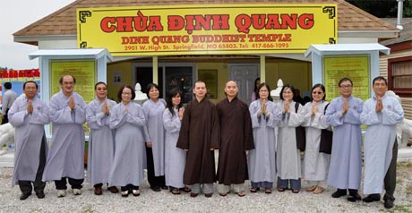

.svg.png)

The Lay Person and Temple Robes

Namo A Di Da Phat!
One practice you may notice when you visit Dinh Quang Temple is the wearing of temple robes. The monastics often
wear yellow robes. For the Vietnamese service, the community wears the traditional blue-grey robes common to temples
in Vietnam and the diaspora. For the ecumenical English-speaking service, the community wears dark brown robes. On
Saturday, April 7, 2018, the Venerable Thich Thong Chanh offered us a teaching on this practice.
Wearing a robe is a bell of mindfulness, a reminder to the community in at least four ways:
First, the robes are a simple color, inviting and reminding the community to practice simplicity and humility, both
at the temple and throughout their daily lives.
Second, the robes remind us to respect the Triple Gem, the Buddha, Dharma, and Sangha. As a community of practice,
aspiring to the Buddha's path, this also reminds us to respect one another.
Third, the robes remind us to be mindful of our habits. When you are wearing a robe, it is easier to remember, to
notice when you are about to do or say something that you would like to restrain. The robe also helps us to focus the
mind and remember and keep our aspirations, our commitment to acting with greater kindness and wisdom.
Fourth, the robes remind us that we are a community and that we represent the temple. At times, we also wear the robes
in public, such as at funerals or during hospital visits.
The venerable concluded by sharing his personal experience of wearing a robe: “When I wear this, it reminds me,
'you are a monk.' It reminds me to honor everyone.”
Thank you, Master Thay, for your teaching and example!